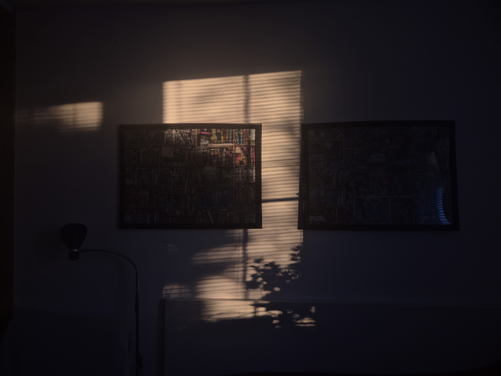
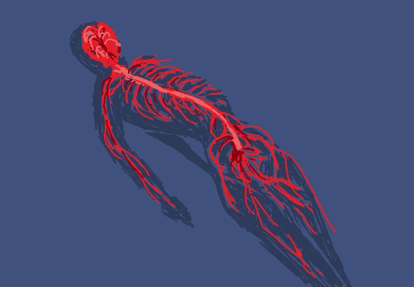
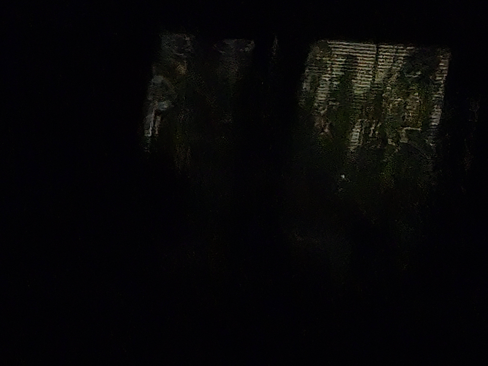
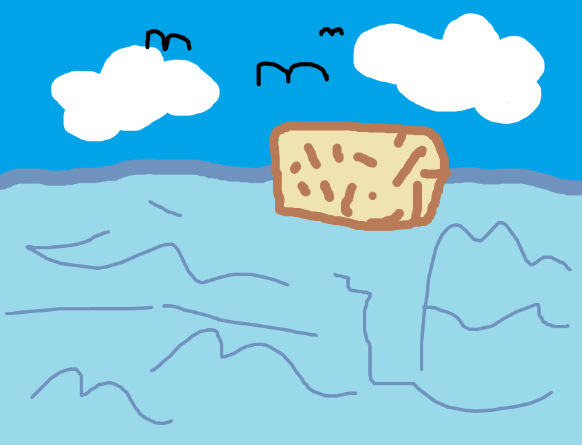

✧✧ Living your life facilitates art. ✧✧
When I look at art that inspires me, I tend to think "Oh, why didn't I think of that?"
or "How did the author conceptualize it? How long did it take them? What are all the things they had to take into account when making it?"
It seems typical for one to look at the piece as a product to be consumed, rather than a remaining record
of a creative process. However, I believe art's purpose really is self-expression.
Art is whatever makes your soul experience itself.
|
MY LINKS Home Hall of Love Blog Contact  |

And the light slipped away once more. How glad I am to have been able to see it while it was here.
✧ Change. ✧
The experience of having someone tell me I'm not good enough has always been a crushing one. —"You'll get it when you're older." I didn't. —"I think you should wait this one out." I wanted to take part. —"You gotta do what you gotta do." I can't handle this. As a child, I was taught to obey, not think. To work hard so that one day, I would mature into the "person I'm supposed to be." One day, they will appreciate you. Hatred festers within when you force yourself to pour your heart into something you don't love. Day by day, you know yourself less and less. You betray yourself every time you choose to ignore that gnawing feeling inside. There is so much within you for you to discover. You already are someone but you don't acknowledge it. Why? But your soul resides outside of 'good' and 'bad'. Somewhere, out there, YOU are. And God, how it scares me to imagine waking up one day, when it's too late, and only then realizing that I lived my life in resentment. It is my responsibility to live my life, not just let it happen to me.

Sometimes I feel like I'm a nervous system that's been inserted into a random body, having to navigate
life via it.
✧ ✧
The human brain is incredibly plastic - humans are surprisingly capable of adapting. And yet, ironically enough, they are deathly afraid of change. Hence, they learn to long-term live under circumstances that are plain bad for them. Although there are possibilities to search for a fulfilling life, people fix themselves a stable place somewhere they don't belong, twisting themselves crooked and solidifying there, like a weed that's used all its life energy to squeeze through cracks in concrete. The thing is, people have the choice to "repot" themselves. It's terrifying to think about how people misuse their talents and live out destinies not meant for them.

July 8, 2025
I wish I could live inbetween so I might not worry about these things. If maybe all they were able to know of my presence was but a vague sense of something in the air. The rain only comes here on a rare occasion but it is that much more entrancing. The hum, the scent, the release in pressure. I got up at 8 a.m. today and brewed fresh coffee in order to keep my eyes open. After lunch, I found all three of us falling asleep over large mugs of coffee. In the first hour of the morning, I lay awake, attempting to discern shapes, perhaps figures, in the reflection of the moon glow. Tommorrow, more tasks await me - ones I am not enthused to undergo. Already, my stomach twists and I know I won't be much convincing when it comes to it.

August 29, 2025
It seems anxiety's main source is the desire to have as much control as possible, the fear of not having things under enough control. When you worry much about what other people are going to do, you torture yourself needlessly. Letting go of the illusion of control. |

Remain delusional